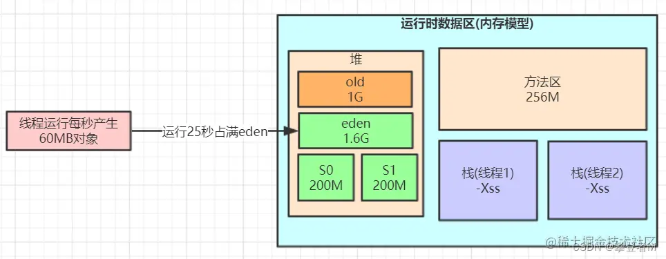
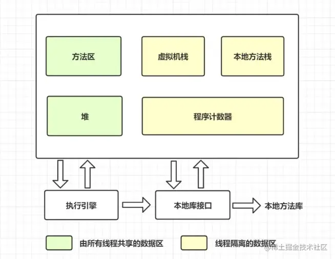
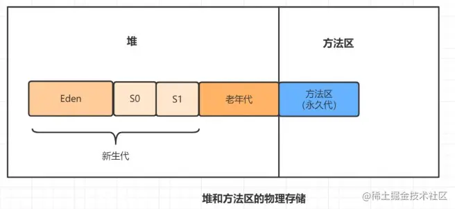
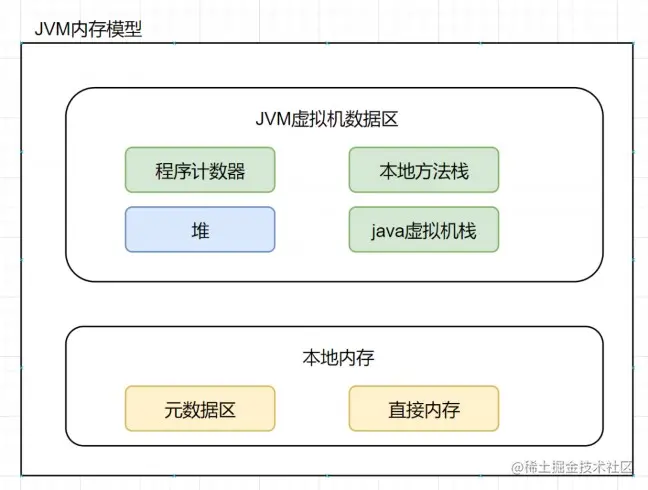

每天100w次登陆请求, 8G 内存该如何设置JVM参数，大概可以分为以下8个步骤。
Step1：新系统上线如何规划容量？
1.套路总结
任何新的业务系统在上线以前都需要去估算服务器配置和JVM的内存参数，这个容量与资源规划并不仅仅是系统架构师的随意估算的，需要根据系统所在业务场景去估算，推断出来一个系统运行模型，评估JVM性能和GC频率等等指标。以下是我结合大牛经验以及自身实践来总结出来的一个建模步骤：
- 计算业务系统每秒钟创建的对象会佔用多大的内存空间，然后计算集群下的每个系统每秒的内存佔用空间（对象创建速度）
- 设置一个机器配置，估算新生代的空间，比较不同新生代大小之下，多久触发一次MinorGC。
- 为了避免频繁GC，就可以重新估算需要多少机器配置，部署多少台机器，给JVM多大内存空间，新生代多大空间。
- 根据这套配置，基本可以推算出整个系统的运行模型，每秒创建多少对象，1s以后成为垃圾，系统运行多久新生代会触发一次GC，频率多高。
2.套路实战——以登录系统为例
有些同学看到这些步骤还是发憷，说的好像是那么回事，一到实际项目中到底怎麽做我还是不知道！
光说不练假把式，以登录系统为例模拟一下推演过程：
- 假设每天100w次登陆请求，登陆峰值在早上，预估峰值时期每秒100次登陆请求。
- 假设部署3台服务器，每台机器每秒处理30次登陆请求，假设一个登陆请求需要处理1秒钟，JVM新生代里每秒就要生成30个登陆对象，1s之后请求完毕这些对象成为了垃圾。
- 一个登陆请求对象假设20个字段，一个对象估算500字节，30个登陆佔用大约15kb，考虑到RPC和DB操作，网络通信、写库、写缓存一顿操作下来，可以扩大到20-50倍，大约1s产生几百k-1M数据。
- 假设2C4G机器部署，分配2G堆内存，新生代则只有几百M，按照1s1M的垃圾产生速度，几百秒就会触发一次MinorGC了。
- 假设4C8G机器部署，分配4G堆内存，新生代分配2G，如此需要几个小时才会触发一次MinorGC。
所以，可以粗略的推断出来一个每天100w次请求的登录系统，按照4C8G的3实例集群配置，分配4G堆内存、2G新生代的JVM，可以保障系统的一个正常负载。
基本上把一个新系统的资源评估了出来，所以搭建新系统要每个实例需要多少容量多少配置，集群配置多少个实例等等这些，并不是拍拍脑袋和胸脯就可以决定的下来的。
Step2：该如何进行垃圾回收器的选择？
吞吐量还是响应时间
首先引入两个概念：吞吐量和低延迟
吞吐量 = CPU在用户应用程序运行的时间 / （CPU在用户应用程序运行的时间 + CPU垃圾回收的时间）
响应时间 = 平均每次的GC的耗时
通常，吞吐优先还是响应优先这个在JVM中是一个两难之选。
堆内存增大，gc一次能处理的数量变大，吞吐量大；但是gc一次的时间会变长，导致后面排队的线程等待时间变长；相反，如果堆内存小，gc一次时间短，排队等待的线程等待时间变短，延迟减少，但一次请求的数量变小（并不绝对符合）。
无法同时兼顾，是吞吐优先还是响应优先，这是一个需要权衡的问题。
垃圾回收器设计上的考量
- JVM在GC时不允许一边垃圾回收，一边还创建新对象（就像不能一边打扫卫生，还在一边扔垃圾）。
- JVM需要一段Stop the world的暂停时间，而STW会造成系统短暂停顿不能处理任何请求；
- 新生代收集频率高，性能优先，常用复制算法；老年代频次低，空间敏感，避免复制方式。
- 所有垃圾回收器的涉及目标都是要让GC频率更少，时间更短，减少GC对系统影响！
CMS和G1
目前主流的垃圾回收器配置是新生代采用ParNew，老年代采用CMS组合的方式，或者是完全采用G1回收器，
从未来的趋势来看，G1是官方维护和更为推崇的垃圾回收器。
业务系统:
- 延迟敏感的推荐CMS；
- 大内存服务，要求高吞吐的，采用G1回收器！
CMS垃圾回收器的工作机制
CMS主要是针对老年代的回收器，老年代是标记-清除，默认会在一次FullGC算法后做整理算法，清理内存碎片。
| CMS GC | 描述 | Stop the world | 速度 |
|---|---|---|---|
| 1.开始标记 | 初始标记仅标记GCRoots能直接关联到的对象，速度很快 | Yes | 很快 |
| 2.并发标记 | 并发标记阶段就是进行GCRoots Tracing的过程 | No | 慢 |
| 3.重新标记 | 重新标记阶段则是为了修正并发标记期间因用户程序继续运作而导致标记产生变动的那一部分对象的标记记录。 | Yes | 很快 |
| 4.垃圾回收 | 并发清理垃圾对象(标记清除算法) | No | 慢 |
- 优点：并发收集、主打“低延时” 。在最耗时的两个阶段都没有发生STW，而需要STW的阶段都以很快速度完成。
- 缺点：1、消耗CPU；2、浮动垃圾；3、内存碎片
- 适用场景：重视服务器响应速度，要求系统停顿时间最短。
总之：
业务系统，延迟敏感的推荐CMS；
大内存服务，要求高吞吐的，采用G1回收器！
Step3：如何对各个分区的比例、大小进行规划
一般的思路为:
首先，JVM最重要最核心的参数是去评估内存和分配，第一步需要指定堆内存的大小，这个是系统上线必须要做的，-Xms 初始堆大小，-Xmx 最大堆大小，后台Java服务中一般都指定为系统内存的一半，过大会佔用服务器的系统资源，过小则无法发挥JVM的最佳性能。
其次，需要指定-Xmn新生代的大小，这个参数非常关键，灵活度很大，虽然sun官方推荐为3/8大小，但是要根据业务场景来定，针对于无状态或者轻状态服务（现在最常见的业务系统如Web应用）来说，一般新生代甚至可以给到堆内存的3/4大小；而对于有状态服务（常见如IM服务、网关接入层等系统）新生代可以按照默认比例1/3来设置。服务有状态，则意味著会有更多的本地缓存和会话状态信息常驻内存，应为要给老年代设置更大的空间来存放这些对象。
最后，是设置-Xss栈内存大小，设置单个线程栈大小，默认值和JDK版本、系统有关，一般默认512~1024kb。一个后台服务如果常驻线程有几百个，那麽栈内存这边也会佔用了几百M的大小。
| JVM参数 | 描述 | 默认 | 推荐 |
|---|---|---|---|
| -Xms | Java堆内存的大小 | OS内存64/1 | OS内存一半 |
| -Xmx | Java堆内存的最大大小 | OS内存4/1 | OS内存一半 |
| -Xmn | Java堆内存中的新生代大小，扣除新生代剩下的就是老年代的内存大小了 | 跌认堆的1/3 | sun推荐3/8 |
| -Xss | 每个线程的栈内存大小 | 和idk有关 | sun |
对于8G内存，一般分配一半的最大内存就可以了,因为机器本上还要占用一定内存，一般是分配4G内存给JVM，
引入性能压测环节，测试同学对登录接口压至1s内60M的对象生成速度，采用ParNew+CMS的组合回收器，
正常的JVM参数配置如下：
1 | -Xms3072M -Xmx3072M -Xss1M -XX:MetaspaceSize=256M -XX:MaxMetaspaceSize=256M -XX:SurvivorRatio=8 |
这样设置可能会由于动态对象年龄判断原则导致频繁full gc。为啥呢？
压测过程中，短时间（比如20S后）Eden区就满了，此时再运行的时候对象已经无法分配，会触发MinorGC，
假设在这次GC后S1装入100M，马上过20S又会触发一次MinorGC，多出来的100M存活对象+S1区的100M已经无法顺利放入到S2区，此时就会触发JVM的动态年龄机制，将一批100M左右的对象推到老年代保存，持续运行一段时间，系统可能一个小时候内就会触发一次FullGC。
按照默认8:1:1的比例来分配时, survivor区只有 1G的 10%左右，也就是几十到100M，
如果 每次minor GC垃圾回收过后进入survivor对象很多，并且survivor对象大小很快超过 Survivor 的 50% ， 那么会触发动态年龄判定规则，让部分对象进入老年代.
而一个GC过程中，可能部分WEB请求未处理完毕, 几十兆对象，进入survivor的概率，是非常大的，甚至是一定会发生的.
如何解决这个问题呢？为了让对象尽可能的在新生代的eden区和survivor区, 尽可能的让survivor区内存多一点,达到200兆左右,
于是我们可以更新下JVM参数设置：
1 | -Xms3072M -Xmx3072M -Xmn2048M -Xss1M -XX:MetaspaceSize=256M -XX:MaxMetaspaceSize=256M -XX:SurvivorRatio=8 |

survivor达到200m，如果几十兆对象到底survivor， survivor 也不一定超过 50%
这样可以防止每次垃圾回收过后，survivor对象太早超过 50% ,
这样就降低了因为对象动态年龄判断原则导致的对象频繁进入老年代的问题，
什么是JVM动态年龄判断规则呢？
对象进入老年代的动态年龄判断规则（动态晋升年龄计算阈值）：Minor GC 时，Survivor 中年龄 1 到 N 的对象大小超过 Survivor 的 50% 时，则将大于等于年龄 N 的对象放入老年代。
核心的优化策略是：是让短期存活的对象尽量都留在survivor里，不要进入老年代，这样在minor gc的时候这些对象都会被回收，不会进到老年代从而导致full gc。
应该如何去评估新生代内存和分配合适？
这里特别说一下，JVM最重要最核心的参数是去评估内存和分配，
第一步需要指定堆内存的大小，这个是系统上线必须要做的，-Xms 初始堆大小，-Xmx 最大堆大小，
后台Java服务中一般都指定为系统内存的一半，过大会佔用服务器的系统资源，过小则无法发挥JVM的最佳性能。
其次需要指定-Xmn新生代的大小，这个参数非常关键，灵活度很大，虽然sun官方推荐为3/8大小，但是要根据业务场景来定：
- 针对于无状态或者轻状态服务（现在最常见的业务系统如Web应用）来说，一般新生代甚至可以给到堆内存的3/4大小；
- 而对于有状态服务（常见如IM服务、网关接入层等系统）新生代可以按照默认比例1/3来设置。
服务有状态，则意味著会有更多的本地缓存和会话状态信息常驻内存，应为要给老年代设置更大的空间来存放这些对象。
step4：栈内存大小多少比较合适？
-Xss栈内存大小，设置单个线程栈大小，默认值和JDK版本、系统有关，一般默认512~1024kb。一个后台服务如果常驻线程有几百个，那麽栈内存这边也会佔用了几百M的大小。
step5：对象年龄应该为多少才移动到老年代比较合适？
假设一次minor gc要间隔二三十秒，并且，大多数对象一般在几秒内就会变为垃圾，
如果对象这么长时间都没被回收，比如2分钟没有回收，可以认为这些对象是会存活的比较长的对象，从而移动到老年代，而不是继续一直占用survivor区空间。
所以，可以将默认的15岁改小一点，比如改为5，
那么意味着对象要经过5次minor gc才会进入老年代，整个时间也有一两分钟了（5*30s= 150s），和几秒的时间相比，对象已经存活了足够长时间了。
所以：可以适当调整JVM参数如下：
1 | ‐Xms3072M ‐Xmx3072M ‐Xmn2048M ‐Xss1M ‐XX:MetaspaceSize=256M ‐XX:MaxMetaspaceSize=256M ‐XX:SurvivorRatio=8 ‐XX:MaxTenuringThreshold=5 |
step6：多大的对象，可以直接到老年代比较合适？
对于多大的对象直接进入老年代(参数-XX:PretenureSizeThreshold)，一般可以结合自己系统看下有没有什么大对象 生成，预估下大对象的大小，一般来说设置为1M就差不多了，很少有超过1M的大对象，
所以：可以适当调整JVM参数如下：
1 | ‐Xms3072M ‐Xmx3072M ‐Xmn2048M ‐Xss1M ‐XX:MetaspaceSize=256M ‐XX:MaxMetaspaceSize=256M ‐XX:SurvivorRatio=8 ‐XX:MaxTenuringThreshold=5 ‐XX:PretenureSizeThreshold=1M |
step7：垃圾回收器CMS老年代的参数优化
JDK8默认的垃圾回收器是-XX:+UseParallelGC(年轻代)和-XX:+UseParallelOldGC(老年代)，
如果内存较大(超过4个G，只是经验 值)，还是建议使用G1.
这里是4G以内，又是主打“低延时” 的业务系统，可以使用下面的组合：
1 | ParNew+CMS(-XX:+UseParNewGC -XX:+UseConcMarkSweepGC) |
新生代的采用ParNew回收器，工作流程就是经典复制算法，在三块区中进行流转回收，只不过采用多线程并行的方式加快了MinorGC速度。
老生代的采用CMS。再去优化老年代参数：比如老年代默认在标记清除以后会做整理，还可以在CMS的增加GC频次还是增加GC时长上做些取舍，
如下是响应优先的参数调优：
1 | XX:CMSInitiatingOccupancyFraction=70 |
设定CMS在对内存占用率达到70%的时候开始GC(因为CMS会有浮动垃圾,所以一般都较早启动GC)
1 | XX:+UseCMSInitiatinpOccupancyOnly |
和上面搭配使用，否则只生效一次
1 | -XX:+AlwaysPreTouch |
强制操作系统把内存真正分配给IVM，而不是用时才分配。
综上，只要年轻代参数设置合理，老年代CMS的参数设置基本都可以用默认值，如下所示：
1 | ‐Xms3072M ‐Xmx3072M ‐Xmn2048M ‐Xss1M ‐XX:MetaspaceSize=256M ‐XX:MaxMetaspaceSize=256M ‐XX:SurvivorRatio=8 ‐XX:MaxTenuringThreshold=5 ‐XX:PretenureSizeThreshold=1M ‐XX:+UseParNewGC ‐XX:+UseConcMarkSweepGC ‐XX:CMSInitiatingOccupancyFraction=70 ‐XX:+UseCMSInitiatingOccupancyOnly ‐XX:+AlwaysPreTouch |
参数解释
1.‐Xms3072M ‐Xmx3072M 最小最大堆设置为3g，最大最小设置为一致防止内存抖动
2.‐Xss1M 线程栈1m
3.‐Xmn2048M ‐XX:SurvivorRatio=8 年轻代大小2g，eden与survivor的比例为8:1:1，也就是1.6g:0.2g:0.2g
4.-XX:MaxTenuringThreshold=5 年龄为5进入老年代 5.‐XX:PretenureSizeThreshold=1M 大于1m的大对象直接在老年代生成
6.‐XX:+UseParNewGC ‐XX:+UseConcMarkSweepGC 使用ParNew+cms垃圾回收器组合
7.‐XX:CMSInitiatingOccupancyFraction=70 老年代中对象达到这个比例后触发fullgc
8.‐XX:+UseCMSInitiatinpOccupancyOnly 老年代中对象达到这个比例后触发fullgc，每次
9.‐XX:+AlwaysPreTouch 强制操作系统把内存真正分配给IVM，而不是用时才分配。
step8：配置OOM时候的内存dump文件和GC日志
额外增加了GC日志打印、OOM自动dump等配置内容，帮助进行问题排查
1 | -XX:+HeapDumpOnOutOfMemoryError |
在Out Of Memory，JVM快死掉的时候，输出Heap Dump到指定文件。
不然开发很多时候还真不知道怎么重现错误。
路径只指向目录，JVM会保持文件名的唯一性，叫java_pid${pid}.hprof。
1 | -XX:+HeapDumpOnOutOfMemoryError |
因为如果指向特定的文件，而文件已存在，反而不能写入。
输出4G的HeapDump，会导致IO性能问题，在普通硬盘上，会造成20秒以上的硬盘IO跑满，
需要注意一下，但在容器环境下，这个也会影响同一宿主机上的其他容器。
GC的日志的输出也很重要：
1 | -Xloggc:/dev/xxx/gc.log |
GC的日志实际上对系统性能影响不大，打日志对排查GC问题很重要。
一份通用的JVM参数模板
一般来说，大企业或者架构师团队，都会为项目的业务系统定制一份较为通用的JVM参数模板，但是许多小企业和团队可能就疏于这一块的设计，如果老板某一天突然让你负责定制一个新系统的JVM参数，你上网去搜大量的JVM调优文章或博客，结果发现都是零零散散的、不成体系的JVM参数讲解，根本下不了手，这个时候你就需要一份较为通用的JVM参数模板了，不能保证性能最佳，但是至少能让JVM这一层是稳定可控的，
在这里给大家总结了一份模板：
基于4C8G系统的ParNew+CMS回收器模板（响应优先），新生代大小根据业务灵活调整！
1 | -Xms4g |
如果是GC的吞吐优先，推荐使用G1，基于8C16G系统的G1回收器模板：
G1收集器自身已经有一套预测和调整机制了，因此我们首先的选择是相信它，
即调整-XX:MaxGCPauseMillis=N参数，这也符合G1的目的——让GC调优尽量简单！
同时也不要自己显式设置新生代的大小（用-Xmn或-XX:NewRatio参数），
如果人为干预新生代的大小，会导致目标时间这个参数失效。
1 | -Xms8g |
| G1参数 | 描述 | 默认值 |
|---|---|---|
| XX:MaxGCPauseMillis=N | 最大GC停顿时间。柔性目标，JVM满足90%，不保证100%。 | 200 |
| -XX:nitiatingHeapOccupancyPercent=n | 当整个堆的空间使用百分比超过这个值时，就会融发MixGC | 45 |
针对-XX:MaxGCPauseMillis来说，参数的设置带有明显的倾向性：调低↓：延迟更低，但MinorGC频繁，MixGC回收老年代区减少，增大Full GC的风险。调高↑：单次回收更多的对象，但系统整体响应时间也会被拉长。
针对InitiatingHeapOccupancyPercent来说，调参大小的效果也不一样：调低↓：更早触发MixGC，浪费cpu。调高↑：堆积过多代回收region，增大FullGC的风险。
调优总结
系统在上线前的综合调优思路：
1、业务预估：根据预期的并发量、平均每个任务的内存需求大小，然后评估需要几台机器来承载，每台机器需要什么样的配置。
2、容量预估：根据系统的任务处理速度，然后合理分配Eden、Surivior区大小，老年代的内存大小。
3、回收器选型：响应优先的系统，建议采用ParNew+CMS回收器；吞吐优先、多核大内存(heap size≥8G)服务，建议采用G1回收器。
4、优化思路：让短命对象在MinorGC阶段就被回收（同时回收后的存活对象<Survivor区域50%，可控制保留在新生代），长命对象尽早进入老年代，不要在新生代来回复制；尽量减少Full GC的频率，避免FGC系统的影响。
5、到目前为止，总结到的调优的过程主要基于上线前的测试验证阶段，所以我们尽量在上线之前，就将机器的JVM参数设置到最优！
JVM调优只是一个手段，但并不一定所有问题都可以通过JVM进行调优解决，大多数的Java应用不需要进行JVM优化，我们可以遵循以下的一些原则：
- 上线之前，应先考虑将机器的JVM参数设置到最优；
- 减少创建对象的数量（代码层面）；
- 减少使用全局变量和大对象（代码层面）；
- 优先架构调优和代码调优，JVM优化是不得已的手段（代码、架构层面）；
- 分析GC情况优化代码比优化JVM参数更好（代码层面）；
通过以上原则，我们发现，其实最有效的优化手段是架构和代码层面的优化，而JVM优化则是最后不得已的手段，也可以说是对服务器配置的最后一次“压榨”。
什么是ZGC？
ZGC （Z Garbage Collector）是一款由Oracle公司研发的，以低延迟为首要目标的一款垃圾收集器。
它是基于动态Region内存布局，（暂时）不设年龄分代，使用了读屏障、染色指针和内存多重映射等技术来实现可并发的标记-整理算法的收集器。
在 JDK 11 新加入，还在实验阶段，
主要特点是：回收TB级内存（最大4T），停顿时间不超过10ms。
优点：低停顿，高吞吐量， ZGC 收集过程中额外耗费的内存小
缺点：浮动垃圾
目前使用的非常少，真正普及还是需要写时间的。
如何选择垃圾收集器？
在真实场景中应该如何去选择呢，下面给出几种建议，希望对你有帮助：
1、如果你的堆大小不是很大（比如 100MB ），选择串行收集器一般是效率最高的。参数：-XX:+UseSerialGC 。
2、如果你的应用运行在单核的机器上，或者你的虚拟机核数只有 单核，选择串行收集器依然是合适的，这时候启用一些并行收集器没有任何收益。参数：-XX:+UseSerialGC 。
3、如果你的应用是“吞吐量”优先的，并且对较长时间的停顿没有什么特别的要求。选择并行收集器是比较好的。参数：-XX:+UseParallelGC 。
4、如果你的应用对响应时间要求较高，想要较少的停顿。甚至 1 秒的停顿都会引起大量的请求失败，那么选择 G1 、 ZGC 、 CMS 都是合理的。虽然这些收集器的 GC 停顿通常都比较短，但它需要一些额外的资源去处理这些工作，通常吞吐量会低一些。参数：-XX:+UseConcMarkSweepGC 、 -XX:+UseG1GC 、 -XX:+UseZGC 等。从上面这些出发点来看，我们平常的 Web 服务器，都是对响应性要求非常高的。
选择性其实就集中在 CMS、G1、ZGC 上。而对于某些定时任务，使用并行收集器，是一个比较好的选择。
Hotspot为什么使用元空间替换了永久代？
什么是元空间？什么是永久代？为什么用元空间代替永久代？
我们先回顾一下方法区吧,看看虚拟机运行时数据内存图，如下:

方法区和堆一样，是各个线程共享的内存区域，它用于存储已被虚拟机加载的类信息、常量、静态变量、即时编译后的代码等数据。
什么是永久代？它和方法区有什么关系呢？
如果在HotSpot虚拟机上开发、部署，很多程序员都把方法区称作永久代。
可以说方法区是规范，永久代是Hotspot针对该规范进行的实现。
在Java7及以前的版本，方法区都是永久代实现的。
什么是元空间？它和方法区有什么关系呢？
对于Java8，HotSpots取消了永久代，取而代之的是元空间(Metaspace)。
换句话说，就是方法区还是在的，只是实现变了，从永久代变为元空间了。
为什么使用元空间替换了永久代？
永久代的方法区，和堆使用的物理内存是连续的。
永久代是通过以下这两个参数配置大小的~
-XX:PremSize：设置永久代的初始大小-XX:MaxPermSize: 设置永久代的最大值，默认是64M
对于永久代，如果动态生成很多class的话，就很可能出现java.lang.OutOfMemoryError:PermGen space错误，因为永久代空间配置有限嘛。最典型的场景是，在web开发比较多jsp页面的时候。
JDK8之后，方法区存在于元空间(Metaspace)。
物理内存不再与堆连续，而是直接存在于本地内存中，理论上机器内存有多大，元空间就有多大。
可以通过以下的参数来设置元空间的大小：
-XX:MetaspaceSize，初始空间大小，达到该值就会触发垃圾收集进行类型卸载，同时GC会对该值进行调整：如果释放了大量的空间，就适当降低该值；如果释放了很少的空间，那么在不超过MaxMetaspaceSize时，适当提高该值。-XX:MaxMetaspaceSize，最大空间，默认是没有限制的。-XX:MinMetaspaceFreeRatio，在GC之后，最小的Metaspace剩余空间容量的百分比，减少为分配空间所导致的垃圾收集-XX:MaxMetaspaceFreeRatio，在GC之后，最大的Metaspace剩余空间容量的百分比，减少为释放空间所导致的垃圾收集
所以，为什么使用元空间替换永久代？
表面上看是为了避免OOM异常。
因为通常使用PermSize和MaxPermSize设置永久代的大小就决定了永久代的上限，但是不是总能知道应该设置为多大合适, 如果使用默认值很容易遇到OOM错误。
当使用元空间时，可以加载多少类的元数据就不再由MaxPermSize控制, 而由系统的实际可用空间来控制啦。
什么是Stop The World ? 什么是OopMap？什么是安全点？
进行垃圾回收的过程中，会涉及对象的移动。
为了保证对象引用更新的正确性，必须暂停所有的用户线程，像这样的停顿，虚拟机设计者形象描述为Stop The World。也简称为STW。
在HotSpot中，有个数据结构（映射表）称为OopMap。
一旦类加载动作完成的时候，HotSpot就会把对象内什么偏移量上是什么类型的数据计算出来，记录到OopMap。
在即时编译过程中，也会在特定的位置生成 OopMap，记录下栈上和寄存器里哪些位置是引用。
这些特定的位置主要在：1.循环的末尾（非 counted 循环）
2.方法临返回前 / 调用方法的call指令后
3.可能抛异常的位置
这些位置就叫作安全点(safepoint)。
用户程序执行时并非在代码指令流的任意位置都能够在停顿下来开始垃圾收集，而是必须是执行到安全点才能够暂停。